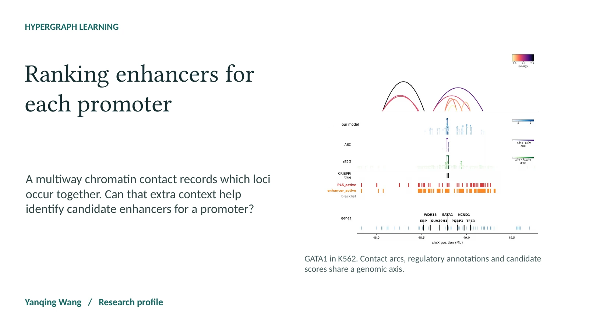

Hypergraph learning
Ranking enhancers for each promoter
A multiway chromatin contact records which loci occur together. Can that extra context help identify candidate enhancers for a promoter?
HiPore-C · K562 and GM12878
Approach
I represented annotated HiPore-C reads as hyperedges and defined separate enhancer and promoter channels. The ranking task asks which enhancers to prioritize for each promoter in K562 and GM12878.
Preliminary locus analysis
In K562, candidate regions around GATA1 coincided with active regulatory features. YDJC offered a contrasting test case because independent perturbation evidence was sparse.
Proposed follow-up
A chromosome-held-out comparison with distance and pairwise-contact baselines would test whether retaining multiway contacts improves ranking across loci.

Project presentation

![Slide 2. I represented annotated HiPore-C reads as hyperedges and defined separate enhancer and promoter channels. The ranking task asks which enhancers to prioritize for each promoter in K562 and GM12878. In K562, candidate regions around GATA1 coincided with active regulatory features. YDJC offered a contrasting test case because independent perturbation evidence was sparse. A chromosome-held-out comparison with distance and pairwise-contact baselines would test whether retaining multiway contacts improves ranking across loci.](../assets/slides/hipore-ranking-2.webp)
Read the PDF on this page
Method reference · HiPore-C assay paper